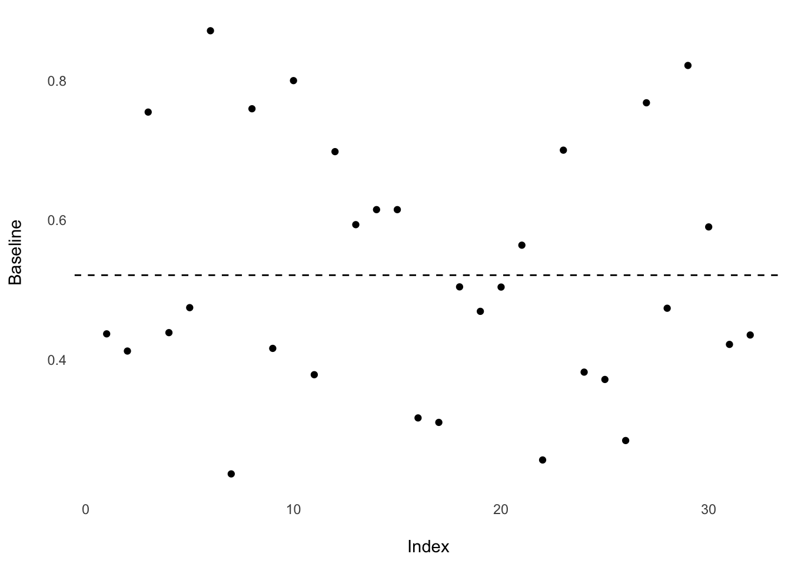
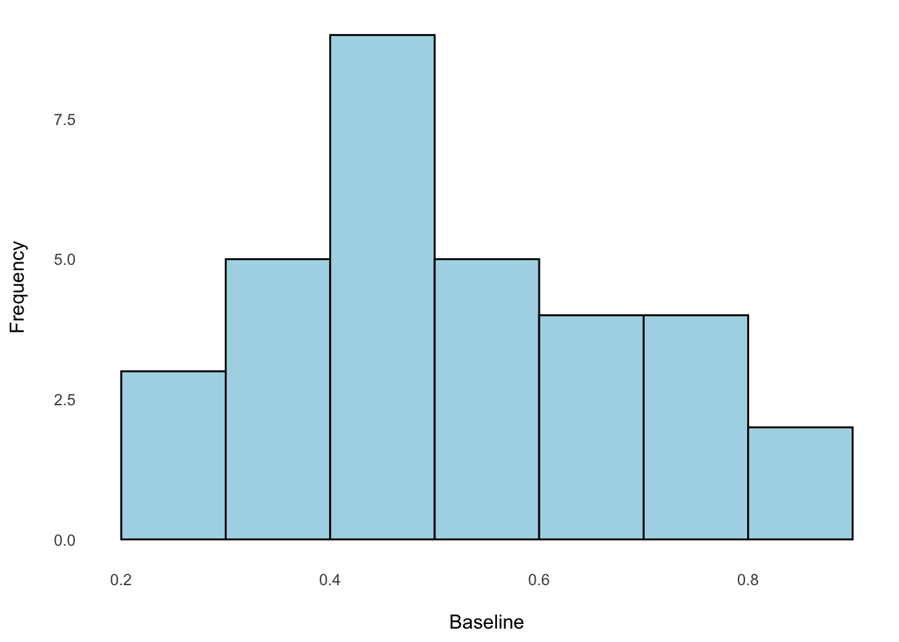
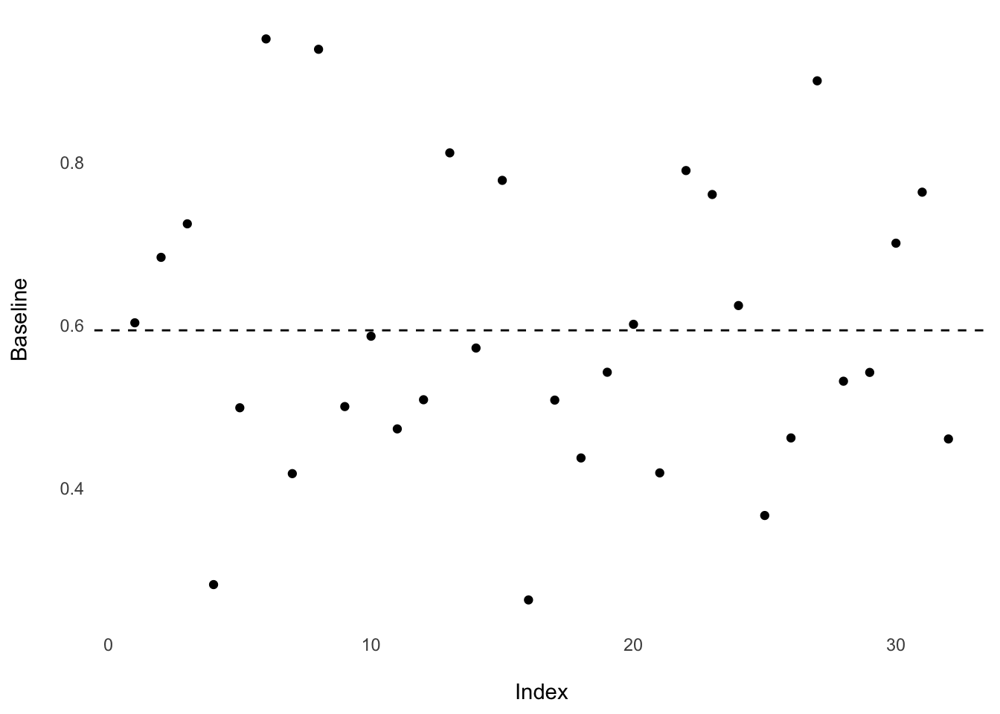
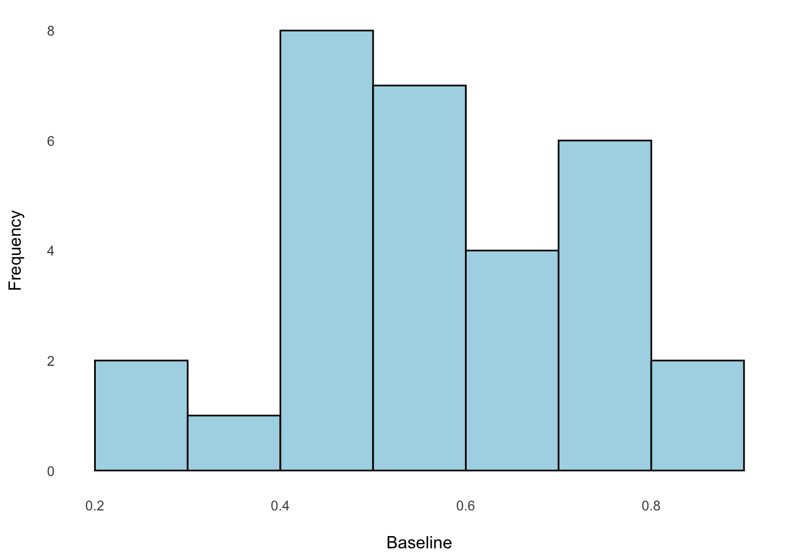
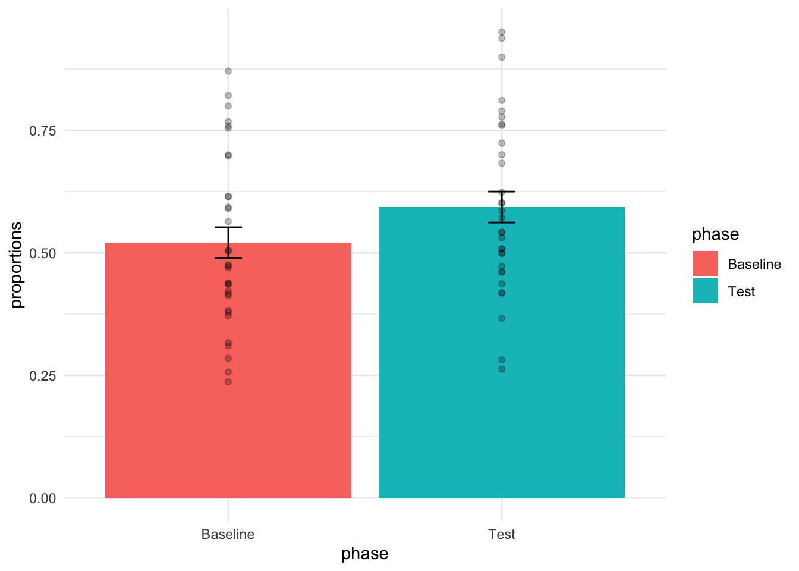

library(dplyr)
library(gt)Lab 6: Paired Sample T-Test
Study Overview
- Study Objective: To investigate if infants can infer social affiliation based on the melody of songs.
- Hypothesis: Infants can recognize familiar melodies and associate them with social group membership.
- Experiment Design: Infants were exposed to a novel lullaby and later observed their looking behavior towards unfamiliar individuals singing either the familiar or an unfamiliar melody.
- Reference: Mehr, S. A., Song, L. A., & Spelke, E. S. (2016). For 5-month-old infants, melodies are social. Psychological Science, 27, 486-501. oai_citation_attribution:1‡crumplab
Lab Skills Acquired
- Conducting paired-samples t-tests.
- Data visualization techniques.
- Interpreting statistical results and understanding their limitations.
Data Analysis Steps
1. Data Preparation
- Loading Data: Download the dataset in
.csvformat. - Inspecting Data: Use R functions like
head()andsummary()to understand the dataset’s structure and contents.
# Read in Data
all_data <-
read.csv("https://raw.githubusercontent.com/CrumpLab/statisticsLab/master/data/MehrSongSpelke2016.csv")
# Preview of Data
all_data |>
gt_preview()| id | study_code | exp1 | exp2 | exp3 | exp4 | exp5 | dob | dot1 | dot2 | dot3 | female | dad | train | Baseline_Proportion_Gaze_to_Singer | Familiarization_Gaze_to_Familiar | Familiarization_Gaze_to_Unfamiliar | Test_Proportion_Gaze_to_Singer | Difference_in_Proportion_Looking | Estimated_Total_Number_of_Song | totskypesing | stim | othersing | comply_no | module | skype_before | ammat | ammar | ammatot | ammapr | ipad_num | famtot_6 | unfamtot_6 | totprac | totw | totnw | age | length | delay | mtotsing | mbabylike | msingcomf | mtotrecord | m_othersong | pright | diarymissing | comply_fup | survey_completion | smsingrate | smtalkrate | gzsingrate | gztalkrate | famtot | unfamtot | totsing1 | babylike1 | singcomf1 | totrecord1 | othersong1 | dtword1 | dtnoword1 | totsing2 | babylike2 | singcomf2 | totrecord2 | othersong2 | dtword2 | dtnoword2 | totsing3 | babylike3 | singcomf3 | totrecord3 | othersong3 | dtword3 | dtnoword3 | totsing4 | babylike4 | singcomf4 | totrecord4 | othersong4 | dtword4 | dtnoword4 | totsing5 | babylike5 | singcomf5 | totrecord5 | othersong5 | dtword5 | dtnoword5 | totsing6 | babylike6 | singcomf6 | totrecord6 | othersong6 | dtword6 | dtnoword6 | totsing7 | babylike7 | singcomf7 | totrecord7 | othersong7 | dtword7 | dtnoword7 | totsing8 | babylike8 | singcomf8 | totrecord8 | othersong8 | dtword8 | dtnoword8 | totsing9 | babylike9 | singcomf9 | totrecord9 | othersong9 | dtword9 | dtnoword9 | totsing10 | babylike10 | singcomf10 | totrecord10 | othersong10 | dtword10 | dtnoword10 | totsing11 | babylike11 | singcomf11 | totrecord11 | othersong11 | dtword11 | dtnoword11 | totsing12 | babylike12 | singcomf12 | totrecord12 | othersong12 | dtword12 | dtnoword12 | totsing13 | babylike13 | singcomf13 | totrecord13 | othersong13 | dtword13 | dtnoword13 | totsing14 | babylike14 | singcomf14 | totrecord14 | othersong14 | dtword14 | dtnoword14 | filter_. | |
|---|---|---|---|---|---|---|---|---|---|---|---|---|---|---|---|---|---|---|---|---|---|---|---|---|---|---|---|---|---|---|---|---|---|---|---|---|---|---|---|---|---|---|---|---|---|---|---|---|---|---|---|---|---|---|---|---|---|---|---|---|---|---|---|---|---|---|---|---|---|---|---|---|---|---|---|---|---|---|---|---|---|---|---|---|---|---|---|---|---|---|---|---|---|---|---|---|---|---|---|---|---|---|---|---|---|---|---|---|---|---|---|---|---|---|---|---|---|---|---|---|---|---|---|---|---|---|---|---|---|---|---|---|---|---|---|---|---|---|---|---|---|---|---|---|---|---|---|---|---|---|---|---|---|
| 1 | 101 | "LUL" | 1 | 0 | 0 | NA | NA | 09oct2012 | 29mar2013 | 05apr2013 | 0 | 0 | 2 | 0.4371257 | 248 | 419 | 0.6027398 | 0.1656140 | 35 | NA | "C1" | 0 | NA | "" | NA | 17 | 26 | 43 | 26 | NA | NA | NA | 15.494160 | 793.3920 | 0.000 | 5.848049 | 7 | NA | 5.000000 | 3.000000 | 3.857143 | 0.5714286 | 3.285714 | 0.80 | 0 | 1 | 1.0000000 | NA | NA | NA | NA | NA | NA | 7 | 3 | 3 | 0 | 6 | 293.02260 | 91.928550 | 5 | 3 | 4 | 0 | 8 | 53.27683 | 25.58346 | 5 | 3 | 4 | 0 | 0 | 79.91525 | 0.0000 | 5 | 3 | 4 | 0 | 9 | 159.6061 | 18.74565 | 4 | 3 | 4 | 2 | 0 | 78.93342 | 0 | 5 | 3 | 4 | 2 | 0 | 76.71582 | 0 | 4 | 3 | 4 | 0 | 0 | 0.00000 | 0.000 | NA | NA | NA | NA | NA | 51.92201 | 0 | NA | NA | NA | NA | NA | 0 | 0 | NA | NA | NA | NA | NA | 0 | 0 | NA | NA | NA | NA | NA | 0 | 0 | NA | NA | NA | NA | NA | 0 | 0 | NA | NA | NA | NA | NA | 0 | 0 | NA | NA | NA | NA | NA | 0 | 0 | 1 | |
| 2 | 102 | "LUL" | 1 | 0 | 0 | NA | NA | 16nov2012 | 10may2013 | 17may2013 | 0 | 1 | 1 | 0.4125326 | 406 | 307 | 0.6830266 | 0.2704940 | 239 | NA | "C1" | 1 | NA | "" | NA | 27 | 28 | 55 | 62 | NA | NA | NA | 5.421422 | 153.7889 | 0.000 | 5.979466 | 7 | NA | 34.142860 | 2.142857 | 4.000000 | 22.2857200 | 1.714286 | 0.80 | 0 | 1 | 1.0000000 | NA | NA | NA | NA | NA | NA | 6 | 2 | 4 | 20 | 0 | 55.80707 | 25.287440 | 25 | 2 | 4 | 50 | 12 | 24.16411 | 0.00000 | 50 | 3 | 4 | 30 | 0 | 0.00000 | 0.0000 | 30 | 2 | 4 | 16 | 0 | 0.0000 | 0.00000 | 40 | 2 | 4 | 30 | 0 | 0.00000 | 0 | 50 | 2 | 4 | 5 | 0 | 24.73150 | 0 | 38 | 2 | 4 | 5 | 0 | 49.08626 | 146.209 | NA | NA | NA | NA | NA | 0.00000 | 0 | NA | NA | NA | NA | NA | 0 | 0 | NA | NA | NA | NA | NA | 0 | 0 | NA | NA | NA | NA | NA | 0 | 0 | NA | NA | NA | NA | NA | 0 | 0 | NA | NA | NA | NA | NA | 0 | 0 | NA | NA | NA | NA | NA | 0 | 0 | 1 | |
| 3 | 103 | "LUL" | 1 | 0 | 0 | NA | NA | 26nov2012 | 11may2013 | 20may2013 | 0 | 0 | 1 | 0.7544910 | 154 | 218 | 0.7241379 | -0.0303531 | 102 | NA | "C2" | 0 | NA | "" | NA | 31 | 34 | 65 | 84 | NA | NA | NA | 5.451066 | 0.0000 | 223.847 | 5.749486 | 9 | NA | 11.333330 | 1.333333 | 3.000000 | 0.0000000 | 0.000000 | 0.96 | 3 | 1 | 0.6666667 | NA | NA | NA | NA | NA | NA | 8 | 2 | 3 | 0 | 0 | 24.55500 | 78.630000 | 25 | 1 | 4 | 0 | 0 | 24.55500 | 145.21700 | 8 | 2 | 3 | 0 | 0 | 0.00000 | 0.0000 | 15 | 1 | 2 | 0 | 0 | 23.9620 | 0.00000 | 6 | 1 | 3 | 0 | 0 | 0.00000 | 0 | 6 | 1 | 3 | 0 | 0 | 0.00000 | 0 | NA | NA | NA | NA | NA | 30.14500 | 0.000 | NA | NA | NA | NA | NA | 0.00000 | 0 | NA | NA | NA | NA | NA | 0 | 0 | NA | NA | NA | NA | NA | 0 | 0 | NA | NA | NA | NA | NA | 0 | 0 | NA | NA | NA | NA | NA | 0 | 0 | NA | NA | NA | NA | NA | 0 | 0 | NA | NA | NA | NA | NA | 0 | 0 | 1 | |
| 4 | 104 | "LUL" | 1 | 0 | 0 | NA | NA | 19nov2012 | 11may2013 | 18may2013 | 1 | 0 | 2 | 0.4388778 | 502 | 666 | 0.2816538 | -0.1572240 | 27 | NA | "C3" | 1 | NA | "" | NA | 25 | 24 | 49 | 44 | NA | NA | NA | 22.339000 | 1163.5830 | 0.000 | 5.913758 | 7 | NA | 3.857143 | 3.428571 | 2.428571 | 0.4285714 | 0.000000 | 1.00 | 0 | 1 | 1.0000000 | NA | NA | NA | NA | NA | NA | 3 | 4 | 2 | 0 | 0 | 13.81173 | 76.202770 | 6 | 3 | 3 | 2 | 0 | 384.78100 | 0.00000 | 6 | 4 | 3 | 0 | 0 | 185.39510 | 100.5546 | 0 | 3 | 2 | 0 | 0 | 321.9076 | 0.00000 | 4 | 3 | 3 | 0 | 0 | 26.45007 | 0 | 4 | 3 | 2 | 1 | 0 | 79.35020 | 0 | 4 | 4 | 2 | 0 | 0 | 106.10170 | 0.000 | NA | NA | NA | NA | NA | 45.78514 | 0 | NA | NA | NA | NA | NA | 0 | 0 | NA | NA | NA | NA | NA | 0 | 0 | NA | NA | NA | NA | NA | 0 | 0 | NA | NA | NA | NA | NA | 0 | 0 | NA | NA | NA | NA | NA | 0 | 0 | NA | NA | NA | NA | NA | 0 | 0 | 1 | |
| 5 | 105 | "LUL" | 1 | 0 | 0 | NA | NA | 29nov2012 | 15may2013 | 29may2013 | 1 | 0 | 2 | 0.4746450 | 311 | 245 | 0.4985423 | 0.0238973 | 60 | NA | "C4" | 0 | NA | "" | NA | 29 | 28 | 57 | 68 | NA | NA | NA | 2.793547 | 157.9989 | 0.000 | 5.946612 | 14 | NA | 4.285714 | 3.142857 | 4.071429 | 4.4285710 | 0.000000 | 1.00 | 0 | 1 | 1.0000000 | NA | NA | NA | NA | NA | NA | 8 | 2 | 3 | 2 | 0 | 131.36050 | 9.613913 | 5 | 3 | 4 | 0 | 0 | 26.63842 | 0.00000 | 6 | 3 | 4 | 0 | 0 | 0.00000 | 0.0000 | 6 | 3 | 4 | 12 | 0 | 0.0000 | 0.00000 | 5 | 4 | 5 | 10 | 0 | 0.00000 | 0 | 6 | 4 | 5 | 0 | 0 | 0.00000 | 0 | 4 | 4 | 4 | 3 | 0 | 0.00000 | 0.000 | 3 | 3 | 4 | 4 | 0 | 0.00000 | 0 | 4 | 3 | 4 | 0 | 0 | 0 | 0 | 3 | 3 | 4 | 6 | 0 | 0 | 0 | 4 | 3 | 4 | 6 | 0 | 0 | 0 | 2 | 3 | 4 | 4 | 0 | 0 | 0 | 0 | 3 | 4 | 15 | 0 | 0 | 0 | 4 | 3 | 4 | 0 | 0 | 0 | 0 | 1 | |
| 6..95 | |||||||||||||||||||||||||||||||||||||||||||||||||||||||||||||||||||||||||||||||||||||||||||||||||||||||||||||||||||||||||||||||||||||||||||||||||||||||||
| 96 | 332 | "LAS" | 0 | 0 | 1 | NA | NA | 13dec2013 | 28may2014 | 04jun2014 | 0 | 0 | 1 | 0.4227273 | 691 | 677 | 0.6629527 | 0.2402254 | 49 | 56 | "C4" | NA | 0 | "" | 1 | NA | NA | NA | NA | 1 | NA | NA | NA | NA | NA | 5.683778 | 7 | NA | 7.000000 | 2.714286 | NA | 2.8571430 | 4.285714 | NA | 0 | 1 | 1.0000000 | 0.0530738 | 0.0333863 | 0.6706967 | 0.6228582 | NA | NA | 6 | 2 | NA | 0 | 4 | NA | NA | 9 | 3 | NA | 2 | 2 | NA | NA | 6 | 3 | NA | 5 | 6 | NA | NA | 6 | 3 | NA | 4 | 4 | NA | NA | 7 | 2 | NA | 5 | 5 | NA | NA | 8 | 3 | NA | 0 | 5 | NA | NA | 7 | 3 | NA | 4 | 4 | NA | NA | NA | NA | NA | NA | NA | NA | NA | NA | NA | NA | NA | NA | NA | NA | NA | NA | NA | NA | NA | NA | NA | NA | NA | NA | NA | NA | NA | NA | NA | NA | NA | NA | NA | NA | NA | NA | NA | NA | NA | NA | NA | NA | NA | NA | NA | NA | NA | NA | NA | 0 |
2. Baseline Phase: One-Sample t-Test
- Purpose: Determine if infants’ gaze proportions during the baseline (silent) phase differ from chance level (0.5).
- Procedure:
- Visualize data distribution using
plot()andhist()functions. - Calculate descriptive statistics: mean and standard deviation.
- Perform a one-sample t-test comparing the mean gaze proportion to 0.5.
- Visualize data distribution using
- Baseline Trial Design: Infants watched a 16-second silent video of two unfamiliar people smiling directly at them.
- Looking Time Analysis: The proportion of time infants looked at the person who would later sing a familiar song was analyzed to determine if there was a bias.
- Statistical Test: A one-sample t-test was used to determine if the average proportion of looking time was significantly different from .5.
library(ggplot2)
# Filter Data from Experiment 1
exp_1 <-
all_data |>
filter(exp1==1)
exp_1 |>
select(Baseline_Proportion_Gaze_to_Singer) |>
ggplot(aes(y = Baseline_Proportion_Gaze_to_Singer,
x = 1:length(Baseline_Proportion_Gaze_to_Singer))) +
geom_point() +
theme_minimal() +
labs(
x = "\nIndex",
y = "Baseline\n"
) +
theme(
panel.grid = element_blank()
) +
geom_hline(
aes(
yintercept = mean(Baseline_Proportion_Gaze_to_Singer)),
lty = "dashed"
)
library(ggplot2)
# Filter Data from Experiment 1
exp_1 <-
all_data |>
filter(exp1==1)
exp_1 |>
select(Baseline_Proportion_Gaze_to_Singer) |>
ggplot(aes(x = Baseline_Proportion_Gaze_to_Singer)) +
geom_histogram(
bins = 8,
breaks = c(0.2 ,0.3, 0.4, 0.5, 0.6, 0.7, 0.8, 0.9),
fill = "lightblue",
color = "black"
) +
theme_minimal() +
theme(
panel.grid = element_blank()
) +
labs(
x = "\nBaseline",
y = "Frequency\n"
)
The mean of the Baseline Proportion is .521 and the standard deviation is .176. what do we think this means for our overall finding?
t.test(exp_1$Baseline_Proportion_Gaze_to_Singer, mu = .5) |>
broom::tidy() |>
rename(
`Mean Estimate` = estimate,
`t-Statistic` = statistic,
`p-Value` = p.value,
`Degrees of Freedom` = parameter,
`95% CI Lower` = conf.low,
`95% CI Upper` = conf.high,
`Test Type` = method,
`Tail Direction` = alternative
) |>
gt()| Mean Estimate | t-Statistic | p-Value | Degrees of Freedom | 95% CI Lower | 95% CI Upper | Test Type | Tail Direction |
|---|---|---|---|---|---|---|---|
| 0.5210967 | 0.674375 | 0.5050713 | 31 | 0.457294 | 0.5848994 | One Sample t-test | two.sided |
The average proportion looking time toward the singer was .52, and was not significantly different from .5, according to a one-sample test, t(31) = .67, p = .505
3. Test Phase: Paired-Samples t-Test
- Purpose: Assess if infants’ gaze proportions differ between two conditions: when the singer is on the left versus the right.
- Procedure:
- Compute difference scores between the two conditions.
- Visualize the difference scores.
- Conduct a paired-samples t-test on the difference scores.
- Experiment Procedure: Infants watched silent videos of two women, then listened to one woman sing a familiar song and the other an unfamiliar song. Finally, they watched the silent videos again.
- Hypothesis: Infants would look more at the woman who sang the familiar song.
- Data Analysis: A one-sample t-test will be conducted using existing code to determine if infants looked at the familiar singer for more than 50% of the time.
library(ggplot2)
# Filter Data from Experiment 1
exp_1 <-
all_data |>
filter(exp1==1)
exp_1 |>
select(Test_Proportion_Gaze_to_Singer) |>
ggplot(aes(y = Test_Proportion_Gaze_to_Singer,
x = 1:length(Test_Proportion_Gaze_to_Singer))) +
geom_point() +
theme_minimal() +
labs(
x = "\nIndex",
y = "Baseline\n"
) +
theme(
panel.grid = element_blank()
) +
geom_hline(
aes(
yintercept = mean(Test_Proportion_Gaze_to_Singer)),
lty = "dashed"
)
exp_1 <-
all_data |>
filter(exp1==1)
exp_1 |>
select(Test_Proportion_Gaze_to_Singer) |>
ggplot(aes(x = Test_Proportion_Gaze_to_Singer)) +
geom_histogram(
bins = 8,
breaks = c(0.2 ,0.3, 0.4, 0.5, 0.6, 0.7, 0.8, 0.9),
fill = "lightblue",
color = "black"
) +
theme_minimal() +
theme(
panel.grid = element_blank()
) +
labs(
x = "\nBaseline",
y = "Frequency\n"
)
The mean for the looking duration is .593 and the standard deviation is .17. What do you think will happen?
t.test(exp_1$Test_Proportion_Gaze_to_Singer, mu = .5) |>
broom::tidy() |>
rename(
`Mean Estimate` = estimate,
`t-Statistic` = statistic,
`p-Value` = p.value,
`Degrees of Freedom` = parameter,
`95% CI Lower` = conf.low,
`95% CI Upper` = conf.high,
`Test Type` = method,
`Tail Direction` = alternative
) |>
gt()| Mean Estimate | t-Statistic | p-Value | Degrees of Freedom | 95% CI Lower | 95% CI Upper | Test Type | Tail Direction |
|---|---|---|---|---|---|---|---|
| 0.5934913 | 2.959714 | 0.005855685 | 31 | 0.5290672 | 0.6579153 | One Sample t-test | two.sided |
The average proportion looking time toward the singer was .59, and was significantly different from .5, according to a one-sample test, t(31) = 2.95, p = .005
Combining Baseline and Testing Phase
t.test(exp_1$Test_Proportion_Gaze_to_Singer, exp_1$Baseline_Proportion_Gaze_to_Singer,
paired = TRUE,
var.equal = TRUE) |>
broom::tidy() |>
rename(
`Mean Difference` = estimate,
`t-Statistic` = statistic,
`p-Value` = p.value,
`Degrees of Freedom` = parameter,
`95% CI Lower` = conf.low,
`95% CI Upper` = conf.high,
`Test Type` = method,
`Tail Direction` = alternative
) |>
gt()| Mean Difference | t-Statistic | p-Value | Degrees of Freedom | 95% CI Lower | 95% CI Upper | Test Type | Tail Direction |
|---|---|---|---|---|---|---|---|
| 0.07239458 | 2.41643 | 0.02175293 | 31 | 0.01129217 | 0.133497 | Paired t-test | two.sided |
Visually Showing the Differences
tibble(
phase = rep(c("Baseline","Test"), each = 32),
proportions = c(exp_1$Baseline_Proportion_Gaze_to_Singer,
exp_1$Test_Proportion_Gaze_to_Singer)
) |>
ggplot(aes(phase, proportions)) +
stat_summary(
fun = mean,
geom = "bar",
aes(fill = phase)
) +
geom_point(
alpha = .25
) +
stat_summary(
fun.data = "mean_se",
geom = "errorbar",
width = .1
) +
theme_minimal()